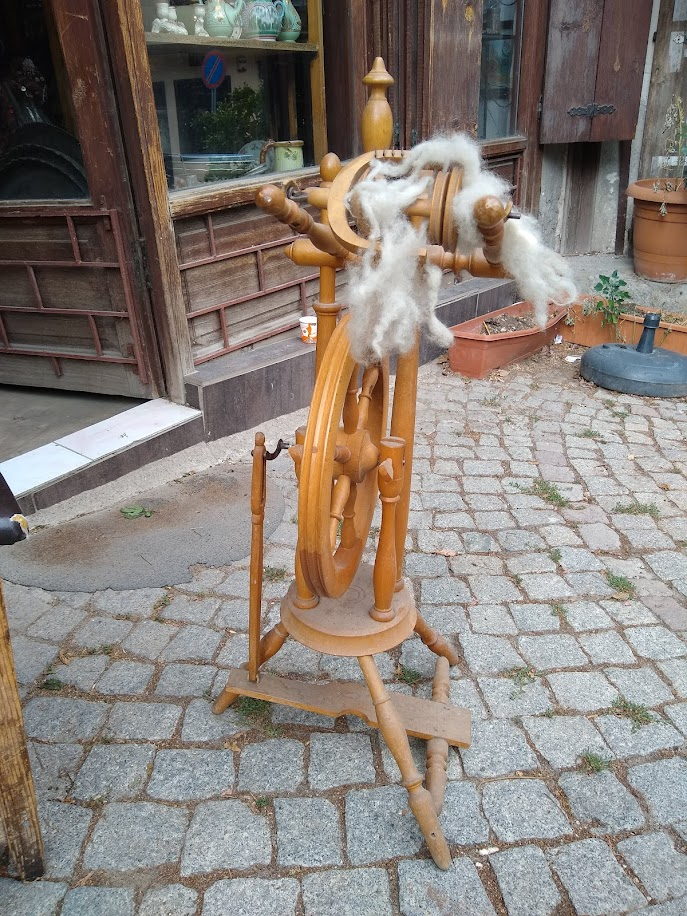
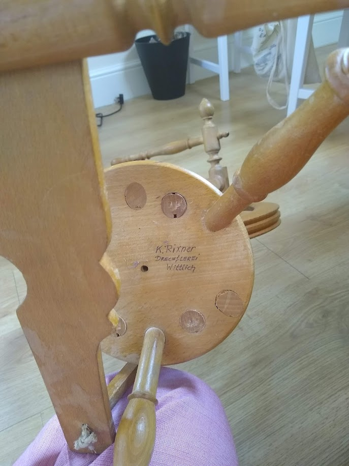

So a thing to know about me is that I enjoy spindles, and I especially enjoy spindles when they've clearly been in use for decades before I acquired them. My dad, knowing this fact about me, once bought me an entire bouquet of antique spindles that he put in my christmas stocking. (A thing to know about my dad is that he is an enabler, but I think that comes across on its own.)
So, my dad and I were on a quest in the old city in Ankara to find more antique spindles, and also some nice carpets to insulate and prettify my flat.Unfortunately, my turkish is lacking when it comes to fibre terms, so getting across what we meant was a reasonably complicated task. In one of the shops I ended up in, I asked about drop spindles, and the shopkeeper said that yes, he had some, and then proceeded to bring out this spinning wheel.
I was very good! I didn't even ask about prices! Until my dad points out that we are very good at packing stuff up and that I've just finished a degree so it would be a nice thing to get. Enabler. After a lot of measuring and discussing whether it works and how it could be dismantled for easier transportation, we leave, with the promise to come back the next day to buy it after we've measured our suitcases.
What this also gives me the chance to do is to have a chat with some friends who've actually used spinning wheels on how terrible an idea this is, which incidentally ends up with them giving me advice on what loom I'll want to start with. (Please note here that I am not learning how to weave, I do not want to learn how to weave, and I am entertaining the fiction that I will never learn how to weave.)
Some creative packing, a plane, two trains, and an under-sea tunnel later, I'm in my flat with a fully remantled spinning wheel. I'll go into more detail into this later, but here are some of the details you're probably here for:
It's an upright spinning wheel with what appears to be double drive tension. It doesn't have anything missing, although when I first bought it the whole bobbin and flyer situation was attached the wrong way, which was pointed out to me as fixable by the shopkeeper.
The shopkeeper acquired it in Marmaris a couple years ago and reckons it was made to order rather than mass manufactured. Some investigation led to finding a signature on the bottom, that reads "K. Rixner, Drechslerei, Wittlich". The name doesn't turn up anything interesting with a brief google search, but I was able to learn that it was the signature of the wood turner. It's not particularly suprising that it's at least partly of german manufacture, although neither of us are convinced that it hasn't had parts replaced over the years.
Other things of note: my spinning wheel expert friend reckons from the size of the whorl and the orifice that this spinning wheel is made for rug yarns, which is to say, quite bulky single ply yarn. This makes sense, given a good number of the shops in the neighbourhood sell rug yarn, as well as rugs. I've been using fibre for rug yarn as I try and get it working.
I'll go in more detail about what the spinning wheel looks like and how it works and how I'm caring for it in future posts: What I figure is that something detailing the process will be useful for anyone wanting to do a project like this from my beginner level, and that if the wheel gets modified in any way this will make for good archival material. In the meantime, feel free to have a browse through the pictures folder here.